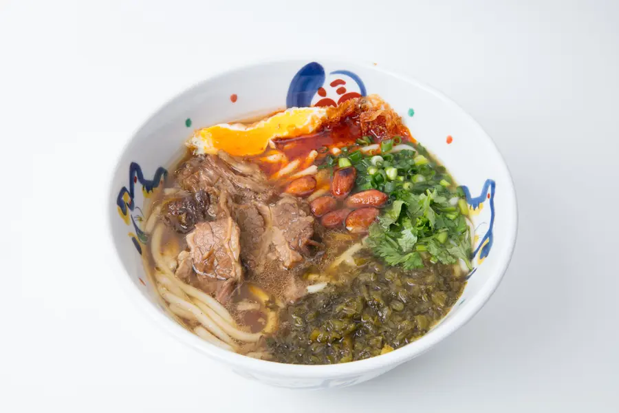
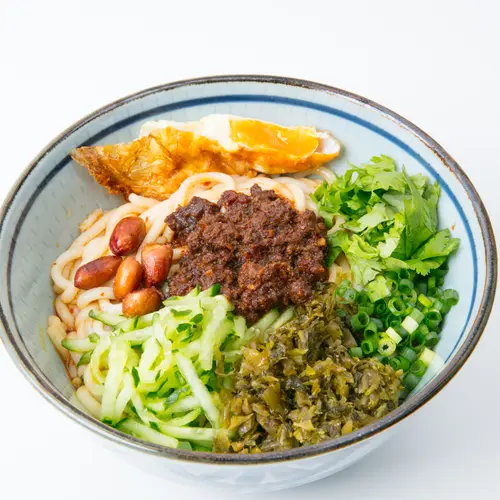
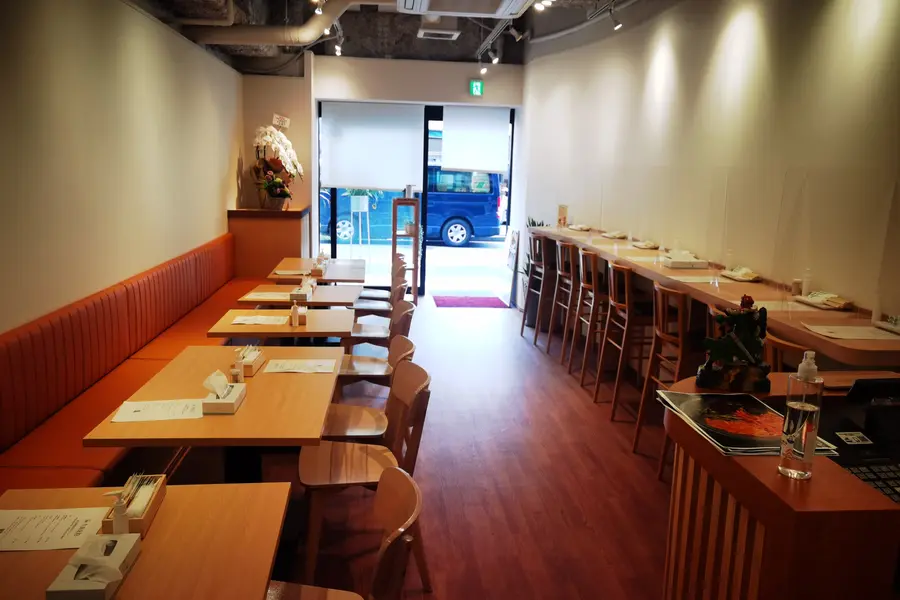
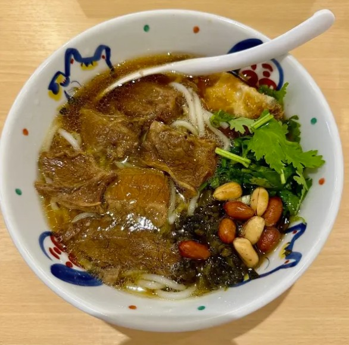

五つのこだわり
思華牛肉米粉が大切にしている、五つの真実
01
本場湖南の味
中国湖南省の伝統製法を忠実に再現。 香り・辛味・旨味のバランスにこだわり、 日本で本場の味を提供します。

02
手作り米粉麺
毎日店内で仕込む自家製の太麺。 もちもちとした食感と、 スープを絡める力が違います。

03
こだわりの空間
和の要素を取り入れた落ち着いた空間。 一杯の麺を、ゆっくりと楽しめる時間を 提供します。

04
毎日仕込むスープ
牛骨と香辛料を長時間煮込み、 深みのある味わいに。 一切の妥協はありません。

05
一杯への誠実さ
すべてはお客様の「美味しい」のために。 素材、技術、想いを込めた一杯を お届けします。